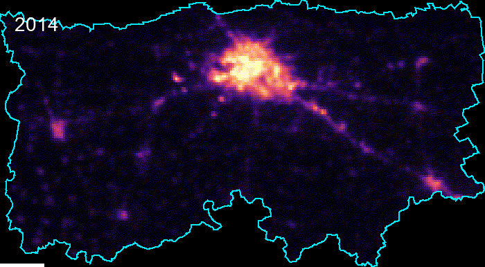
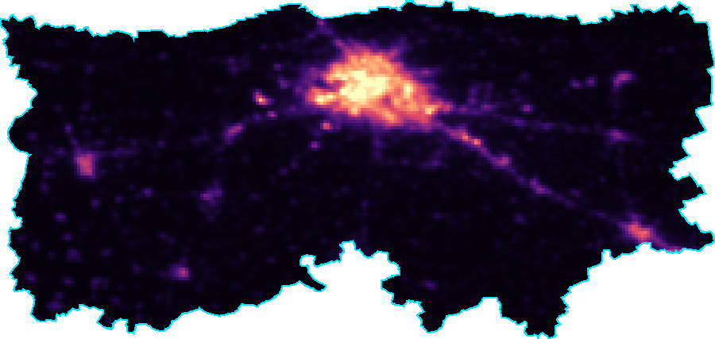
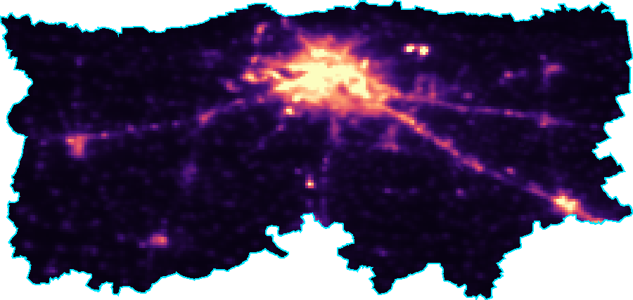
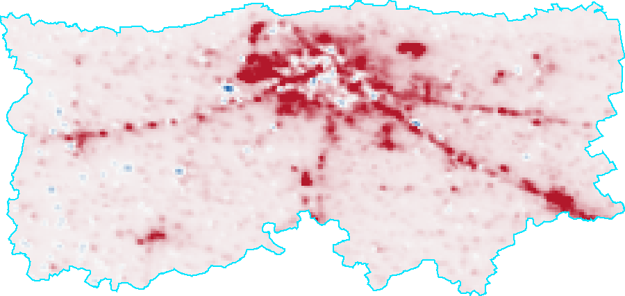

Dataset: VIIRS Night-time Lights (NOAA/VIIRS/DNB/MONTHLY_V1/VCMSLCFG) | Boundary: OpenStreetMap (osmnx)

Key Statistics: Linear trend slope of +0.17 nW/cm²/sr per year (R² = 0.84); overall change from 2014 to 2024 = +73.7%.
2014 Baseline

2024 Final

Net Change Map (2024 minus 2014)

Metrics: Mean pixel increase of 1.62 nW/cm²/sr. 85.9% of city pixels brightened by >0.5, while 0.9% dimmed.
Spatial Pattern: High radiance clusters tightly in commercial and industrial core zones, showing outward spillover into peripheral fringes.
Temporal Change: A 73.7% surge highlights robust regional development and infrastructure rollout.
Limitations: Coarse spatial resolution (~464 m) creates a lighting "blooming" effect into adjacent dark pixels. Radiance tracks economic activity rather than precise population or income directly.